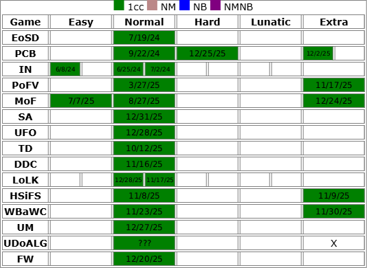

AAbout me (Summary)
Hello! I go by ToolStain or Tools (kinda weird name I made up 2022...)
I do various stuff, but I'm not particularly good at any one thing.
Althought, if you still want to know, I'm decent at these things:
You want to know more about me?
Blender
I started modeling around December 2023, it was only supposed to be a one-time fun thing I did until one of my fan-creations for someone got noticed and wanted to commission me for my horrible model.
After making a few models for them, people started to discover me more frequently somehow, even though I had no other means of contact other than Discord.
This was during a time where in the platform Roblox, making/uploading stuff and giving them out for free or for profit was a popular decision, so modelers were in a sorta highish demand. Throughout 2023 until the first half of 2024, I was getting handfuls model requests even though I knew that my modeling skill were still kinda at a beginner level.
As a result, I kinda got burned out lol
Although now, as of 2025, I barely get any model requests now, which I'm fine with. I'm still not fully advanced into Blender yet though.

Game Impacts
I've only played in a relatively small circle of games, maybe I would make a stronger bond with more games and game genres if I actually played more games outside my circle? Regardless, the games I've played in my circle has left a big impact on me.
Touhou Project
Touhou Project has probably made some of the biggest impacts on me. I think I first heard of Touhou in 2020 from either Bad Apple or Ronald McDonald insanity. Around 2021, I really got into Touhou from JZBoy's Frisk/Chara vs. Sakuya Fight Animation back when I used to watch Undertale Content. After making a few searches about Touhou, I discovered Touhou's music, fan-remixes and fan-content, which caused my everlasting love for Touhou.
I never played the real game until June 6th, 2024. It was a really rough start, on my first playthrough in PCB on easy mode with an extra 2 lives, I only made it to stage 4.
However, it was a really fun experience getting blasted with unfamiliar danmaku and new music I've never heard before, which pushed me to try all of the other games throughout Touhou Project.
So far, this is my current completion chart:
Undertale
Undertale is a game that will also be with me with the rest of time. I honestly forgot how I discovered Undertale in the first place, I assume it was from its music and the flood of fan-content?
When I was younger, I used to explore alot of fanworks based off Undertale for a long while, which showed me many different fan-projects and introduced me to many new games, such as Touhou Project and OneShot.
I probably stayed in that community for too long, I've been beyond brainrotted with the amount fan-content people made... I still love the game though.